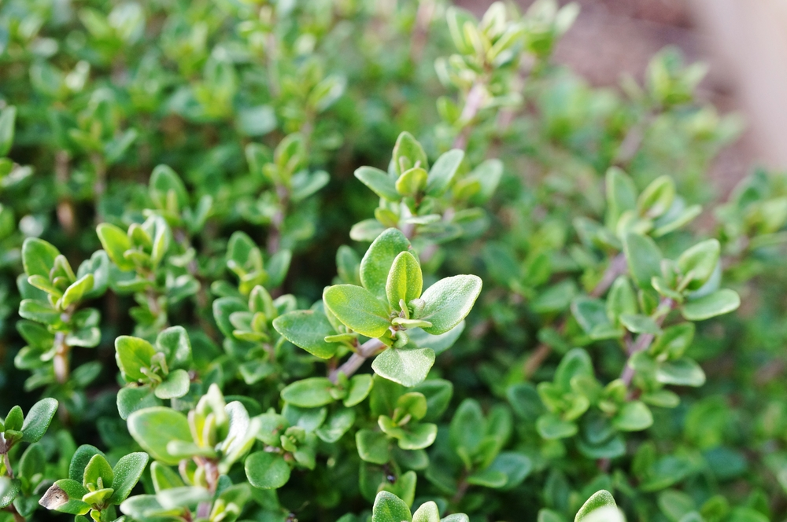

TOMILLO

El tomillo es una planta aromática que se usa como condimento en el norte de África y el Mediterráneo. Pero más allá de su función culinaria, esta hierba también tiene propiedades medicinales que combaten cólicos, dolores de estómago o gases, entre otras cosas.